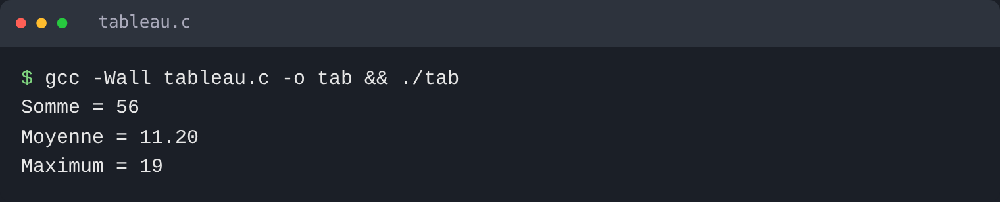
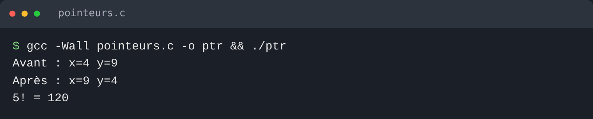

Langage C : 3 programmes
Programme 1 : Parité et signe (variables, conditions)
Problème
Dire si un entier est pair ou impair, positif, négatif ou nul.
Code source
#include <stdio.h>
int main(void) {
int n;
printf("Entre un entier : ");
scanf("%d", &n);
if (n % 2 == 0) printf("%d est pair\n", n);
else printf("%d est impair\n", n);
if (n > 0) printf("Il est positif\n");
else if (n < 0) printf("Il est négatif\n");
else printf("Il est nul\n");
return 0;
}
Fonctionnement
scanf lit l'entier. L'opérateur % donne le reste de la division par 2 : reste 0 = pair. Une chaîne if / else if / else teste le signe. Compilation : gcc pair_impair.c -o pair_impair.
Exécution (sortie réelle du programme)
Entre un entier : -7 est impair
Il est négatif
Capture d'écran

Difficultés rencontrées
Test avec -7 : en C, -7 % 2 vaut -1, donc le test « égal à 0 » est faux et le programme conclut correctement « impair ». Compilation sans avertissement avec -Wall.
Programme 2 : Somme, moyenne, maximum (boucle, tableau)
Problème
Parcourir un tableau de 5 entiers.
Code source
#include <stdio.h>
int main(void) {
int t[5] = {12, 7, 19, 3, 15};
int somme = 0, max = t[0];
for (int i = 0; i < 5; i++) {
somme += t[i];
if (t[i] > max) max = t[i];
}
printf("Somme = %d\n", somme);
printf("Moyenne = %.2f\n", somme / 5.0);
printf("Maximum = %d\n", max);
return 0;
}
Fonctionnement
La boucle for parcourt les indices 0 à 4, cumule la somme et garde le plus grand. On divise par 5.0 (et non 5) pour obtenir une moyenne décimale.
Exécution (sortie réelle du programme)
Somme = 56
Moyenne = 11.20
Maximum = 19
Capture d'écran

Difficultés rencontrées
La moyenne utilise somme / 5.0 : avec / 5 les deux entiers donneraient une division entière (11 au lieu de 11.20).
Programme 3 : Échange et factorielle (fonctions, pointeurs)
Problème
Échanger deux variables et calculer 5!.
Code source
#include <stdio.h>
void echanger(int *a, int *b) {
int temp = *a;
*a = *b;
*b = temp;
}
int factorielle(int n) {
int r = 1;
for (int i = 2; i <= n; i++) r *= i;
return r;
}
int main(void) {
int x = 4, y = 9;
printf("Avant : x=%d y=%d\n", x, y);
echanger(&x, &y);
printf("Après : x=%d y=%d\n", x, y);
printf("5! = %d\n", factorielle(5));
return 0;
}
Fonctionnement
echanger reçoit les adresses (&x) et modifie les vraies variables via *a et *b. Sans pointeurs, la fonction travaillerait sur des copies.
Exécution (sortie réelle du programme)
Avant : x=4 y=9
Après : x=9 y=4
5! = 120
Capture d'écran

Difficultés rencontrées
echanger reçoit des pointeurs (&x, &y). Si on passait x et y directement, la fonction travaillerait sur des copies et rien ne serait échangé (passage par valeur).
Python et C
| Critère | Python | C |
|---|---|---|
| Syntaxe | Courte, l'indentation structure le code | Plus verbeuse, accolades et points-virgules |
| Typage | Dynamique : une variable change de type | Statique : le type est déclaré |
| Mémoire | Gérée automatiquement | Gérée à la main (adresses, pointeurs) |
| Rapidité | Plus lent (interprété) | Très rapide (compilé) |
| Usages | Scripts, données, IA, prototypes | Systèmes, embarqué, performance |
Tableau rédigé avec l'aide de Claude.